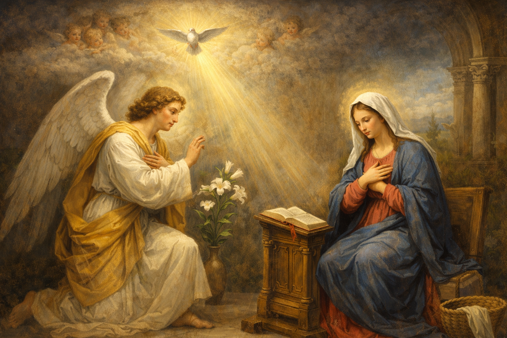

A História e o Significado Profundo da Oração da Ave Maria
A Ave Maria é, sem dúvida, uma das orações mais recitadas e amadas em todo o mundo católico. Ela compõe o coração do Santo Terço e é a base de inúmeras devoções marianas. No entanto, muitos fiéis a recitam de forma automática, sem compreender a riqueza teológica e a evolução histórica que transformaram essas palavras em um dos pilares da nossa fé.
A Origem Bíblica: O Encontro do Céu com a Terra
A primeira parte da Ave Maria não é uma criação humana, mas uma compilação de passagens sagradas do Evangelho de São Lucas. Ela registra dois momentos cruciais da história da salvação onde o divino interage diretamente com o humano através de Maria.
A Saudação do Anjo Gabriel
As palavras "Ave, Maria, cheia de graça, o Senhor é convosco" (Lucas 1, 28) representam a saudação angélica. O termo original grego Kecharitomene traduzido como "cheia de graça", indica que Maria foi preparada por Deus, desde sua concepção, para ser a morada do Altíssimo. É o reconhecimento da sua pureza e da sua eleição divina.
"Entrando, o anjo disse-lhe: Ave, cheia de graça, o Senhor é contigo." (Lucas 1, 28)
A Saudação de Santa Isabel
A continuação, "bendita sois vós entre as mulheres e bendito é o fruto do vosso ventre", vem do encontro de Maria com sua prima Isabel (Lucas 1, 42). Sob a inspiração do Espírito Santo, Isabel reconhece em Maria a Mãe do seu Senhor, estabelecendo a primeira veneração pública à Virgem Santíssima registrada nas Escrituras.
A Evolução Histórica: Do Século XI ao Concílio de Trento
Embora as saudações bíblicas fossem usadas na liturgia desde os primeiros séculos, a oração como a conhecemos hoje levou tempo para ser formalizada. Até o século XI, era comum recitar apenas a primeira parte (a saudação bíblica). O nome "Jesus" foi adicionado por volta do século XIII, por sugestão do Papa Urbano IV, para enfatizar que Ele é o centro da nossa fé.
A Petição Final: "Santa Maria, Mãe de Deus..."
A segunda parte da oração — "Santa Maria, Mãe de Deus, rogai por nós, pecadores, agora e na hora de nossa morte" — é uma petição da Igreja. Ela surgiu organicamente na piedade popular durante tempos de grandes provações, como a Peste Negra na Europa, onde o povo buscava o auxílio materno de Maria diante da iminência da morte.
A forma completa da Ave Maria foi oficialmente impressa no Breviário Romano pelo Papa São Pio V em 1568, após o Concílio de Trento, tornando-se o padrão para toda a Igreja Latina.
Significado Teológico: Por que rezamos a Maria?
É fundamental esclarecer que os católicos não adoram Maria, mas a veneram (hiperdulia). Ao rezarmos a Ave Maria, estamos cumprindo a profecia bíblica da própria Virgem no Magnificat: "Todas as gerações me chamarão bem-aventurada" (Lucas 1, 48).
A oração é cristocêntrica. Quando dizemos "bendito é o fruto do vosso ventre, Jesus", estamos afirmando a encarnação do Verbo. Maria é a porta pela qual o Salvador entrou no mundo, e sua intercessão é poderosa porque ela está intimamente unida ao seu Filho.
A Importância da Intercessão na Hora da Morte
O pedido final "agora e na hora de nossa morte" reflete a consciência da nossa fragilidade humana. Pedimos que Maria esteja presente no momento mais decisivo de nossa existência, assim como esteve aos pés da cruz de Jesus, garantindo-nos o consolo e a proteção materna na passagem para a eternidade.
Conclusão: Uma Oração para Todos os Momentos
A Ave Maria é uma síntese do Evangelho. Ela nos lembra da humildade de Maria, da grandeza de Deus e da nossa necessidade constante de misericórdia. Ao recitá-la, não estamos apenas repetindo palavras, mas entrando em comunhão com a história da salvação e pedindo a guia daquela que melhor conheceu e amou Jesus Cristo.
Que este estudo ajude você a rezar com mais consciência e fervor, transformando cada Ave Maria em um verdadeiro encontro de amor com a Mãe de Deus e nossa Mãe.